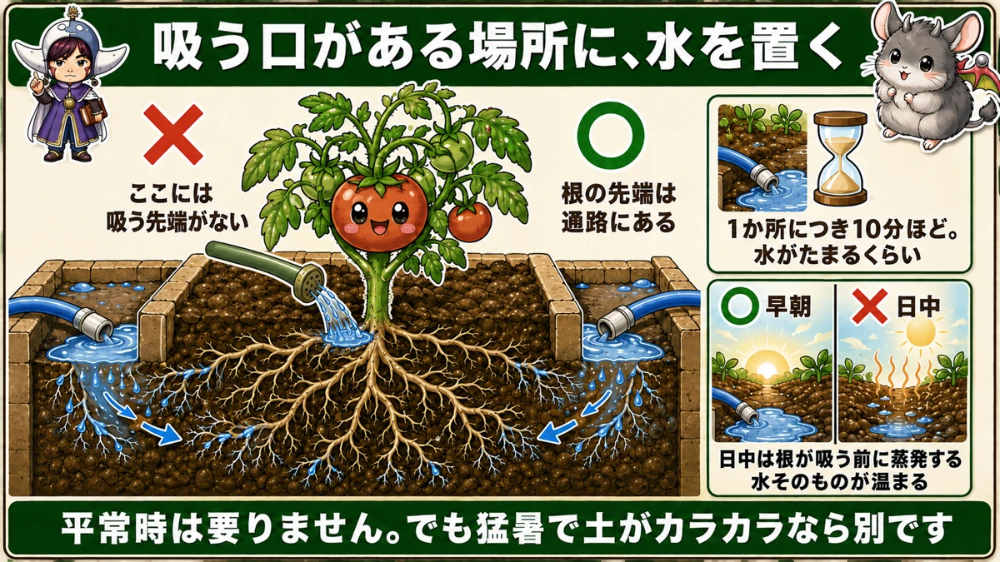
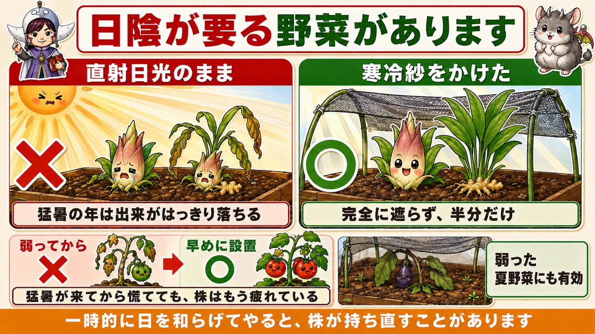
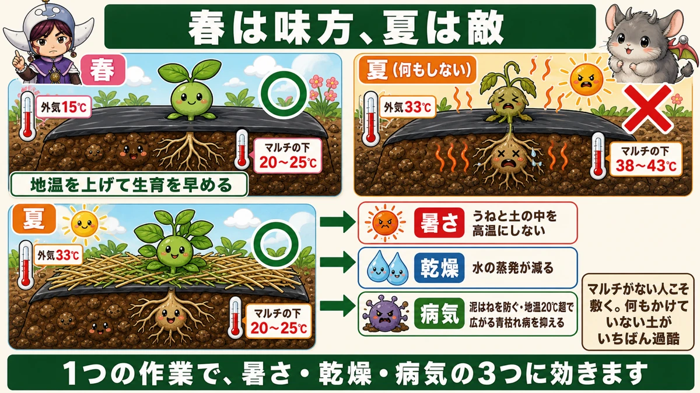
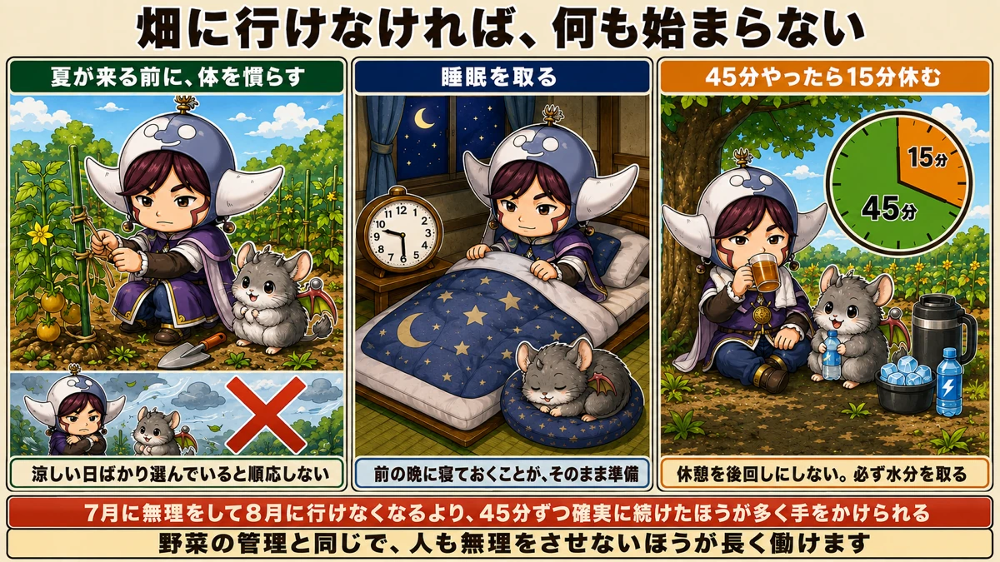

水は株元ではなく、通路にやります🌞 根はそこまで伸びています

🗨️「毎日水をやっているのに、元気がない」
🗨️「35℃を超えると、急に実がつかなくなる」
🗨️「畑に出るのがつらくて、行けなくなった」
どうも、8150（えいこう）です🌱 家庭菜園歴8年、理科の教員免許を持っていて、有機・無農薬で野菜を育てています。
今日は猛暑の話です。★野菜を守る3つと、自分を守る3つをお話しします。
先に、この記事でいちばん言いたいことを言っておきます。
★水は、株元ではなく通路にやってください。
前回、「そんなに水やりは要らない」とお伝えしました。あれは今も本当です。★でも猛暑は別です。そして★かける場所が違います☺️
★35℃を超えると、何が起きるか
野菜も、想定外なんです
前に3月号でお話ししましたが、大事なのでもう一度。
★35℃を超えると、野菜は生育障害を起こします。
- 花粉が死んで、受粉しなくなる
- 実が太るのをやめる
- 株そのものが弱ってくる
★野菜のほうが、追いついていません
ここが本質だと思っています。
★昔の日本には、35℃を超える日がそれほどありませんでした。
今の品種は、そういう気候を前提に作られてきたものです。★猛暑日が当たり前になったのは、ごく最近のことです。
★人間だけでなく、野菜のほうも想定外なんです。
だから、手をかける価値があります。★守ってやれば、収穫の時期を長く伸ばせます。
①★★水は、通路にやる
前回の話と、矛盾しません
まず整理させてください。
★平常時 … 水やりは要りません
高いうねとマルチができていれば、根はすでに広がっていて、土の中に水があります。★表面の乾きで判断しない、という話でした。
★猛暑で土がカラカラのとき … これは別です
さすがに限界があります。日が照り続けて、うねの中まで乾いてくる。★このときは、たっぷりやってください。
★★でも、株元ではありません
ここが今日いちばんお伝えしたいことです。
★株元や葉にかけるのではなく、うねの通路にたくさん与えてください。

理由は、前回お話ししたことです
なぜ通路なのか。
★根が、そこまで伸びているからです。
前回、「根は通路の奥まで伸びている」とお伝えしました。追肥の記事では「根から30cm離す」「うねの肩口を50cm開けて外側へ」と書きました。
★根の先端は、株元ではなく通路にあります。
そして★根は先端でしか吸えません。
★吸う口がある場所に、水を置く。追肥とまったく同じ考え方です。
★量は、想像の10倍です
やり方を具体的にお伝えします。
★ホースを通路に置いて、1か所につき10分ほど放水してください。
★水がたまるくらいです。
「そんなに？」と思われるかもしれません。私も最初は驚きました。でも★猛暑日は、少しくらいの水では一瞬で乾きます。
じょうろやバケツでやる場合も、★「たっぷり」の感覚を上げてください。表面が濡れただけでは、根まで届いていません。
★早朝にやってください
時間も大事です。
★早朝にやってください。
日中にやると、こうなります。
- ★根が吸い上げる前に、蒸発してしまう
- ★水そのものが温かくなる
前回、ホースの最初の水がお湯になる話をしました。★日中は、土に置いた水もすぐ温まります。
★涼しいうちに、根の届く場所へ、たっぷり。これが猛暑の水やりです。
②★寒冷紗で、半日陰を作る
日陰が要る野菜があります
すべての野菜が直射日光を好むわけではありません。
★ミョウガ、生姜。これらは半日陰を好みます。

★猛暑の年は、こういう野菜の出来がはっきり落ちます。私が読んだ農家さんも、「去年はミョウガがいまひとつだった。猛暑が影響したと思う」と書いていました。
★早めに設置します
やることは簡単です。★寒冷紗をかけて、半日陰を作ります。
大事なのは時期です。★弱ってからではなく、早めに設置してください。
同じ方が、翌年は早めに設置したところ、元気に育ったそうです。★猛暑が来てから慌てても、株はもう疲れています。
弱った夏野菜にも使えます
半日陰を好む野菜だけでなく、★猛暑でぐったりしてしまった夏野菜にも有効です。
一時的に日を和らげてやると、株が持ち直すことがあります。★完全に遮るのではなく、半分だけ。だから「半日陰」です。
③★★マルチの上に、わらを敷く
夏のマルチは、敵になります
これがいちばん実用的で、いちばん見落とされている手だと思います。
前にじゃがいものところで、こうお伝えしました。
★黒マルチの下は、気温より5〜10℃高くなります。
春はそれが味方でした。地温を上げて、生育を早めてくれた。
★でも夏は、逆になります。

やることは、上に敷くだけ
★黒マルチの上に、わらや刈った雑草を敷いてください。
目的は2つです。
- ★うねの表面を高温にしない
- ★土の中を高温にしない
★芽が傷んだり、株全体が弱ったりするのを防げます。
★マルチがない人こそ、やってください
ここは強調しておきます。
★マルチを張っていない方は、必ずやってください。
マルチがない地面は、★さらに高温になります。そして★乾燥もひどくなります。
わらを敷くだけで、地表の温度が下がり、水の蒸発も減ります。★何もかけていない土が、いちばん過酷です。
★病気の対策にもなります
もうひとつ、大事な効果があります。
前に病気の話をしたとき、こうお伝えしました。
★青枯れ病は、地温が20℃を超えると広がりやすくなる。
★地温を下げることは、そのまま病気の対策になります。
そして★わらは泥はねも防ぎます。うどんこ病もべと病も、土の中の菌が泥はねで葉に付くのが入口でした。
★1つの作業で、暑さ・乾燥・病気の3つに効きます。手をかける価値のある作業です。
★自分を守る、3つ
畑に行けなければ、何も始まりません
ここからは、野菜ではなく人の話です。
★どんな管理も、畑に行けなければできません。
私が実践していることを3つ、お伝えします。医学の話ではなく、続けるための工夫だと思ってください。

1. ★夏が来る前に、体を慣らす
いちばん大事だと思っているのがこれです。
★暑くなる前の暖かい日に、外で作業しておく。
★涼しい日や曇りの日ばかり選んで作業していると、体が暑さに順応しません。
そして真夏になって、いきなり暑さの中へ入る。★これがいちばんこたえます。
特別なことをする必要はありません。★誘引、草取り、うね立て。いつもの作業を、少し暑い日にやっておくだけです。
2. ★睡眠を取る
★夜更かしをすると、翌日の暑さに対応できません。
畑仕事は朝が中心です。★前の晩に寝ておくことが、そのまま準備になります。
当たり前のようですが、私はこれをおろそかにして何度もつらい思いをしました。
3. ★★45分やったら、15分休む
作業のリズムです。
★45分作業して、15分は木陰で休む。これを繰り返します。
★休憩を「後回し」にしないのがコツです。まだ大丈夫、と思っているうちに休む。
そして★必ず水分を取ってください。
- 保冷ポットに氷と麦茶を入れて持っていく
- ★塩分を含むスポーツ飲料も有効です
★1日中、冷たいものが飲める状態にしておく。これだけで作業が続けられます。
★続けられることが、いちばん
猛暑の畑仕事で、いちばんもったいないのは★途中で行けなくなることです。
7月に無理をして、8月に一度も畑へ行けなくなる。★それなら、45分ずつ確実に続けたほうが、はるかに多く手をかけられます。
野菜の管理と同じで、★人も無理をさせないほうが長く働けます。
猛暑を越えるために
この記事の要点
- ★35℃を超えると野菜は生育障害を起こす。花粉が死に、実が太らなくなる
- ★昔の日本には猛暑日が少なかった。★野菜のほうも想定外
- ★守ってやれば、収穫の時期を長く伸ばせる
- ★平常時は水やり不要。★でも猛暑で土がカラカラなら別
- ★★水は株元ではなく、うねの通路にやる
- 理由は★根が通路まで伸びているから。★根は先端でしか吸えない
- ★吸う口がある場所に水を置く。追肥とまったく同じ考え方
- ★ホースを通路に置いて、1か所10分ほど放水。★水がたまるくらい
- ★猛暑日は、少しの水では一瞬で乾く
- ★早朝にやる。日中は★根が吸う前に蒸発し、水そのものが温まる
- ★ミョウガ・生姜など半日陰を好む野菜は、寒冷紗が要る
- ★猛暑の年は出来がはっきり落ちる。★弱ってからではなく早めに設置する
- ★弱った夏野菜にも有効。完全に遮らず、半分だけ
- ★★黒マルチの上に、わらや刈った雑草を敷く
- 春は味方だったマルチが、★夏は逆になる（下は気温＋5〜10℃）
- ★マルチがない人こそ敷く。★何もかけていない土がいちばん過酷
- ★地温を下げることは、そのまま病気の対策になる（青枯れ病は地温20℃超で広がる）
- ★わらは泥はねも防ぐ。★1つの作業で暑さ・乾燥・病気の3つに効く
- 自分を守る3つ＝★暑くなる前に体を慣らす／★睡眠を取る／★45分作業して15分休む
- ★涼しい日ばかり選んで作業していると順応しない
- ★休憩を後回しにしない。★必ず水分を取る。塩分を含む飲み物も
- ★途中で行けなくなるのが、いちばんもったいない
全部やろうとしなくて大丈夫です。まずは今週末、★マルチの上に刈った草を敷いてみてください。捨てるはずだった草が、そのまま道具になります🌞
次回は、7月の作業の話。1年でいちばん過酷な月に、何を優先すればいいのかをまとめます🌻
ここまで読んでくださって、ありがとうございました。
日よけ・遮光ネット
遮光50%で半日陰を作ります。かけっぱなしにせず、日中だけ。
![[商品価格に関しましては、リンクが作成された時点と現時点で情報が変更されている場合がございます。]](https://hbb.afl.rakuten.co.jp/hgb/565b708e.e3f248ff.565b708f.4c3ea46d/?me_id=1194418&item_id=10631677&pc=https%3A%2F%2Fthumbnail.image.rakuten.co.jp%2F%400_mall%2Fminatodenk%2Fcabinet%2Ffs%2F0109%2Ffs-0117352.jpg%3F_ex%3D240x240&s=240x240&t=picttext "[商品価格に関しましては、リンクが作成された時点と現時点で情報が変更されている場合がございます。]")

敷きわら
マルチの上に敷きます。黒マルチは日光を吸って熱くなるので、その上を覆う。
![[商品価格に関しましては、リンクが作成された時点と現時点で情報が変更されている場合がございます。]](https://hbb.afl.rakuten.co.jp/hgb/56bc2fb2.ff40a6e6.56bc2fb3.618f6a70/?me_id=1257026&item_id=10000211&pc=https%3A%2F%2Fthumbnail.image.rakuten.co.jp%2F%400_mall%2Fsharuka%2Fcabinet%2F09042254%2Fimgrc0081094692.jpg%3F_ex%3D240x240&s=240x240&t=picttext "[商品価格に関しましては、リンクが作成された時点と現時点で情報が変更されている場合がございます。]")
アーチ支柱
遮光ネットを浮かせる骨です。葉に触れさせないための高さが要ります。

じょうろ（8L）
水は株元ではなく通路にやります。根はそこまで伸びています。

あわせて読みたい